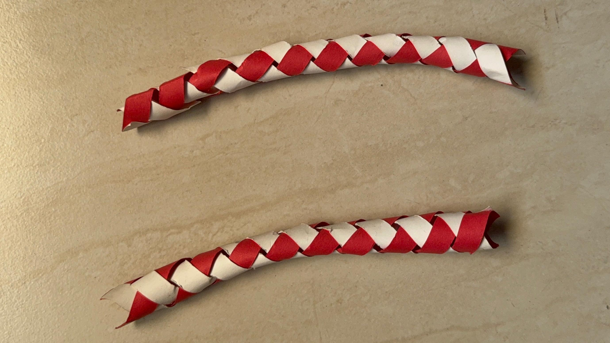

Crafts
Chinese Finger Trap

About This Piece
I made a Chinese Finger Trap using paper weaving techniques. I enjoyed experimenting with the structure because the simple woven pattern creates a surprising mechanical effect.
The design works by tightening when pulled and loosening when pushed inward, making it a fun interactive craft.